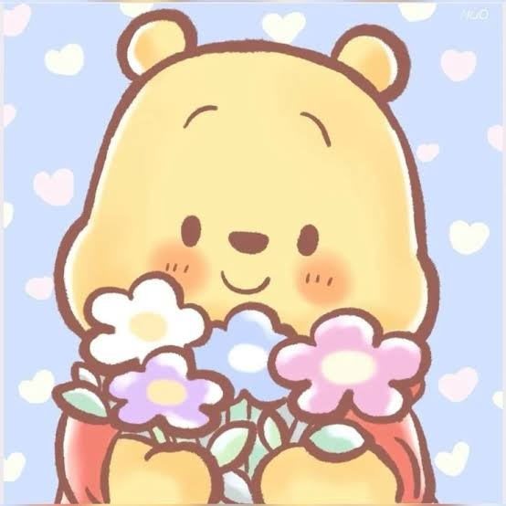

21 de Septiembre 💛
Para Jhen 🌻
Hoy es 21 de Setiembre, y lo siento por no poder darte flores amarillas reales, y que la distancia se haya vuelto un ladron, no nos quita el sentimiento, pero si nos roba los abrazos cotidianos y los momentos compartidos, te amo mucho mi corazon de ciruela, espero que esta web te haya gustado.

“Si tú vas a vivir cien años, yo quiero vivir cien años menos un día, porque no quiero pasar un día sin ti”. — Winnie the Pooh
💡 Toca la pantalla para hacer brotar más girasoles amarillos ✨
✨
Jardín: Girasoles 🌻